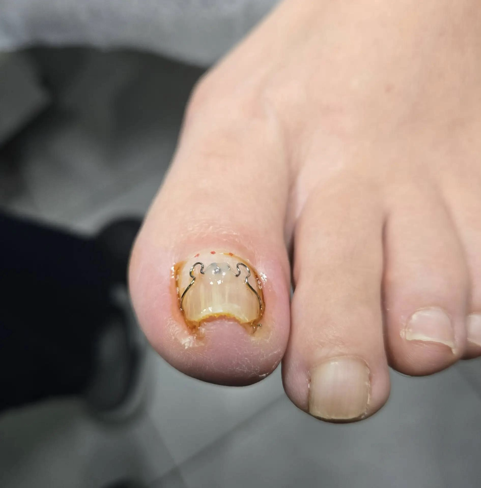
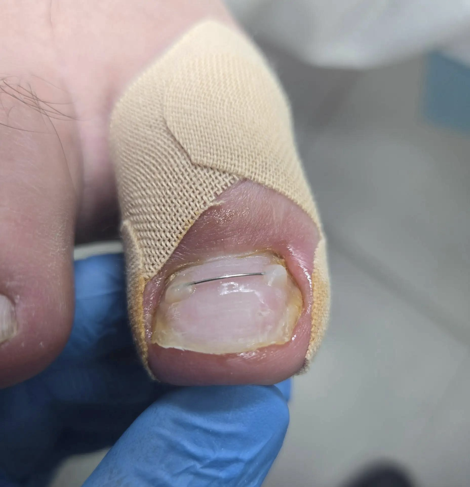
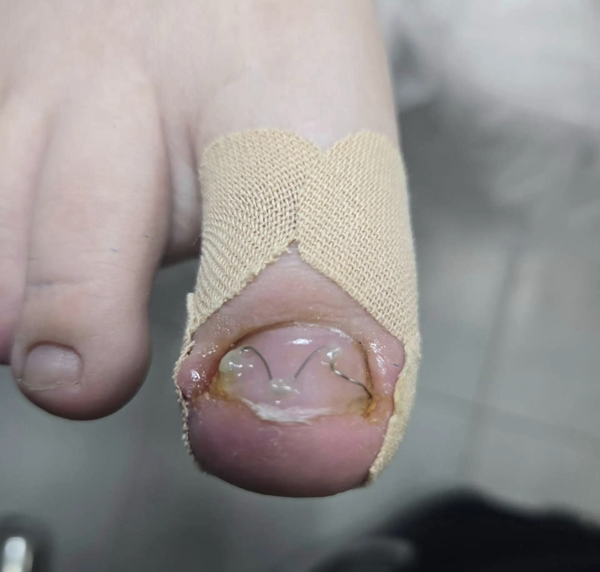

Коррекционная система
Коррекционная система (ортониксия) — это консервативный метод, который мягко исправляет форму ногтевой пластины, устраняя причину врастания. Она создает контролируемое натяжение, приподнимая края ногтя и постепенно выравнивая его рост. По мере отрастания ноготь принимает правильную форму, что снижает риск повторного врастания.
Виды коррекционных систем
Существует несколько типов систем, которые подбираются индивидуально подологом с учётом степени деформации, толщины ногтя и других особенностей.
Титановая нить
Это тонкая проволока из никель-титанового сплава (нитинола), обладающего «памятью формы». После фиксации на ногте нить стремится вернуться к исходной прямой форме, мягко приподнимая края ногтя. Подходит для тонких, ломких ногтей и случаев скручивания.
Скоба 3ТО
Трёхкомпонентная система: две скобы с крючками фиксируются по краям ногтя, а центральный стягивающий зажим регулирует натяжение. Обеспечивает мощное и независимое воздействие на оба края, что эффективно при тяжёлых деформациях.
Система Podofix
Гибкая пластина из пластика с встроенной проволочной петлёй. После приклеивания на ноготь петля активируется скручиванием, создавая корректирующее усилие.
Система UniBrace
Индивидуально изготовленная проволочная конструкция, действующая за счёт комбинации рычага, вращения и упругости.
Когда нужна коррекционная система
- Вросший ноготь на любой стадии (кроме запущенных случаев с глубоким воспалением).
- Деформация ногтевой пластины после травмы.
- Скручивание ногтя, изменение его формы.
- Поддержка формы ногтя после ранее выполненной коррекции.
Этапы проведения процедуры
Приём начинается не с выбора системы, а с осмотра. Подолог смотрит, где именно ноготь давит, как он растёт, есть ли воспаление, насколько плотная пластина, как подрезан край и что происходит с обувью. Только после этого выбирается метод.
- Оценка состояния. Подолог оценивает степень врастания, толщину и форму ногтя, состояние окружающих тканей.
- Подготовка. Ноготь очищают, при необходимости аккуратно снимают ороговевший слой и обрабатывают антисептиком.
- Установка системы. В зависимости от типа конструкции её фиксируют на поверхности ногтя с помощью клея, композита или специальных крючков.
- Контроль. Специалист объясняет правила ухода и рекомендует плановые визиты для коррекции натяжения и оценки изменений.
Процедура обычно безболезненна.
Сроки коррекции
В среднем коррекция занимает от 3 до 6 месяцев, но в сложных случаях может потребоваться до года. Точный срок зависит от степени деформации, скорости роста ногтя и соблюдения рекомендаций специалиста.
Коррекционная система воздействует на ноготь по мере его роста. Поэтому первая установка не всегда равна завершению работы: специалисту нужно проверить, уменьшается ли давление, как держится система и не изменилась ли кожа вокруг ногтя.
Сроки и число коррекций индивидуальны. Они зависят от скорости роста ногтя, выраженности деформации, состояния боковых валиков, обуви и соблюдения рекомендаций.
Коррекционная система — это не мгновенное решение, а процесс, требующий времени и дисциплины. Главное — довериться подологу и строго следовать его инструкциям.
Часто задаваемые вопросы
Бывает ли больно при установке коррекционной системы?
В большинстве случаев процедура безболезненна: система крепится к поверхности ногтя, где нет нервных окончаний.
Как понять, что система действительно нужна?
Специалист на консультации оценит степень деформации, причину врастания (неправильная обувь, травма, особенности роста) и подберёт метод индивидуально.
Сколько носить систему?
Срок индивидуален: в среднем от 3 до 6 месяцев, но в сложных случаях может потребоваться больше времени.
Примеры работ
Нажмите «Показать», чтобы посмотреть фотографии полностью.



Запишитесь на приём
Оставьте заявку — мы свяжемся с вами и подберём удобное время.